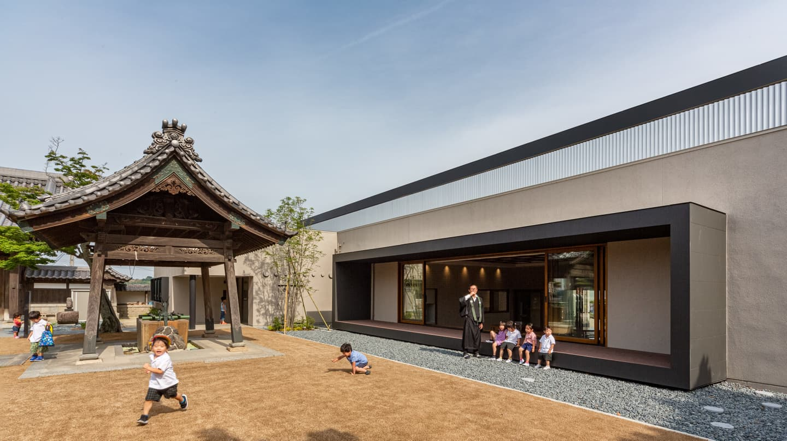
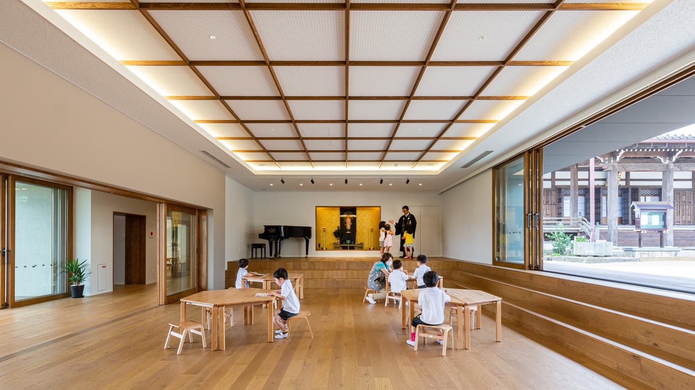
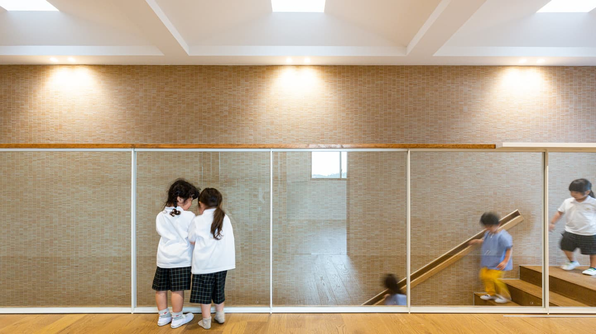
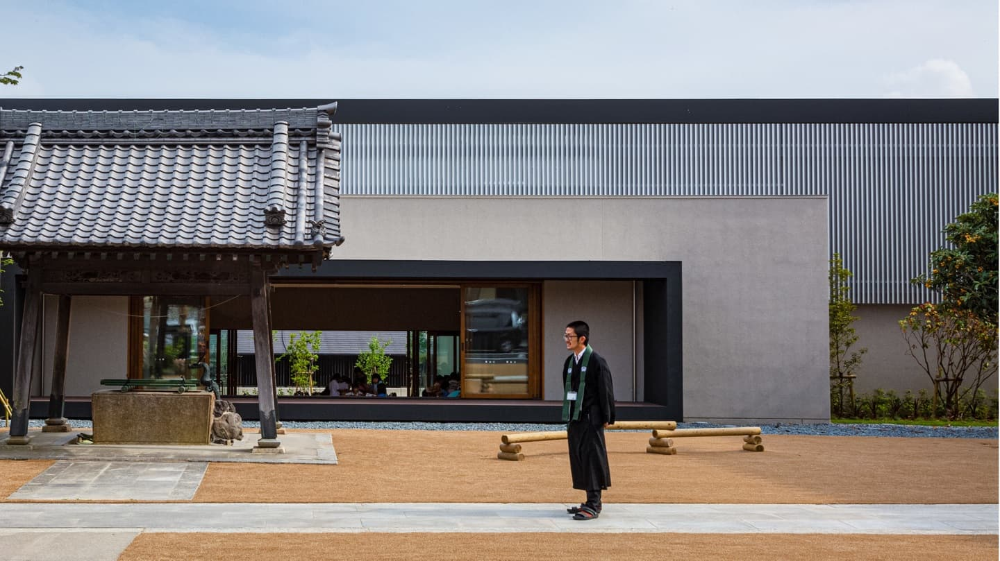
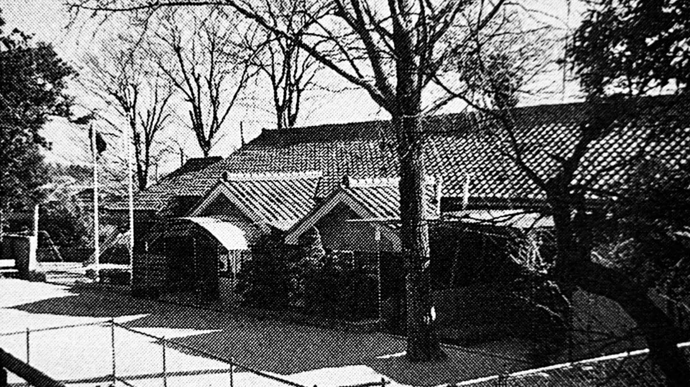

先ず獣身を成して、
後に人心を養う
乳幼児期の身体の育成を目的に、十分な戸外遊びなどを行い、丈夫で健康な体を育む。同時に、運動を通して健やかな心の育ち、何事にも意欲的に取り組む姿勢を身につける。
教育と保育の一体型“認定こども園”
地域のこども達のためにお寺の本堂で保育をはじめた当園は
おかげさまで令和2年4月に、阿久比町で初めて“認定こども園”となりました。
人として育つ上でもっとも重要な幼少期を
元気いっぱいに、優しさ・自然の尊さなどを学ぶことが出来ます。
これまでも、そしてこれからも地域のこども達の明るい未来の
一助となることが私たちの使命だと考えています。

乳幼児期の身体の育成を目的に、十分な戸外遊びなどを行い、丈夫で健康な体を育む。同時に、運動を通して健やかな心の育ち、何事にも意欲的に取り組む姿勢を身につける。

仏教保育の精神に基づき、自らが自然の中で生かされていることを知り、自然やいのちに感謝する心を育むことを目標とする。

年齢に応じた発達をして、身の回りのことの自立、自ら考えて行動し、また集団生活で他者を思いやる心を持った人としての成長を願うことである。

令和２年４月、阿久比町で初めての認定こども園が開園しました。南部保育園は、蓮慶寺の住職であった祖父が地域のこども達のためにお寺の本堂で保育を始めたことから開園しました。以来、木造園舎、虹の園舎を建設し、多くの園児達が南部保育園を卒園しました。
令和元年度に３回目の園舎新築工事を行い、同時に、多様な子育てのニーズに合わせて、保育園から幼保連携型認定こども園に移行することとなりました。
父から園長を引き継ぎ、また私自身子どもを育てる親となり、乳幼児期が人間の成長の上で非常に大切な時期と知りました。その大切な時期の子ども達を預かるこども園の園長として、上記の新しい教育保育理念のもと、こども達が様々な経験、遊びを通して自ら生長する力を伸ばしていきたいと考えています。
園長 佐治 慶
